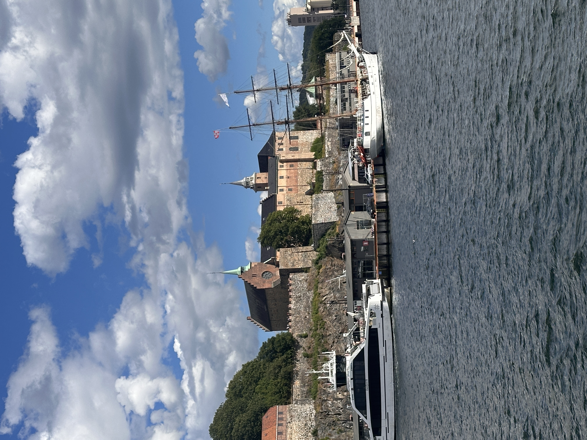

MITT OSLO · REDAKSJONELL STANDARD
Nyhetene – uten oppdiktede detaljer
Vi viser publiserte nyhetssaker med kildehenvisninger. Innholdet er ikke uavhengig faktaverifisert av Aurora. Vi bruker kun autentiske fotografier med fotografens tillatelse.
Henter publiserte nyhetsdata …